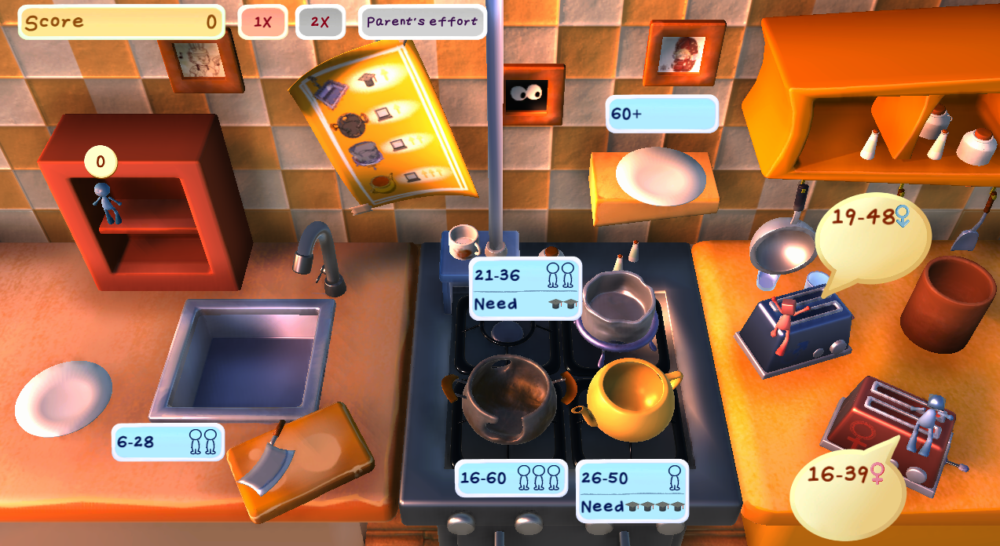

Cook Human On Time
Not all fish swim in the same sea — but some are cooked in gilded pots.
How to Play
About
Cook Human On Time is a Unity simulation that stages the idea of the social clock inside a kitchen. You play a Great Chef — and Great Parent — preparing human ingredients against the clock: washing each one in the sink (school) and cooking it in the pot (work), so that every life is served on time.
The social clock is the cultural timetable that pressures people to reach milestones — schooling, employment, marriage, parenthood — by a certain age, and quietly stigmatises anyone who falls behind, a weight felt especially sharply in Asian cultures. The game makes that pressure literal: each ingredient must be cooked within a strict window, and missing it means the dish — the life — turns out wrong.
At its core the game is time management under mounting urgency: players juggle several lives at once against tightening deadlines, where an ingredient's quality — its education and career level, its age — and the timing of every move decide the score society hands back. I tuned the time limits, task difficulty and the cost of inaction to amplify that sense of oppression, while keeping the interface deliberately clean — so what the player feels is the pressure of the clock, not the clutter of the UI.
The concept and its central metaphor — staging the social clock as a kitchen — are my own. I led the game design, narrative design and UI/UX, working with Joshua to shape the core mechanics. Co-developed with Joshua (programming & game mechanics) and Kuko (3D art).
Design Highlights
- [Highlight 1 — lead sentence placeholder] — [Supporting detail placeholder — what the design choice is and why it works.]
- [Highlight 2 — lead sentence placeholder] — [Supporting detail placeholder.]
- [Highlight 3 — lead sentence placeholder] — [Supporting detail placeholder.]
Screenshots
